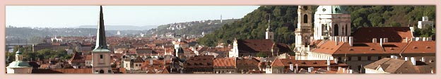

騎士の国「ロシュオール」は、豊富な鉄鉱石が取れることでも知られている。
毎年多くの騎士や商人たちが良質な鉄製品を求めてこの国を訪れるが
一方、高原に位置する国でもあるため、天体の観測に訪れる学者や観光客も多い。
ロシュオールから見える星の数は、季節にもよるが、およそ４０００から６０００。
一番明るい一等星は１８個。二等星は５４個。
古来より人々は、その星々を元に、神話と物語を綴ってきた。
天の皇帝・天の英雄
夜空の星々はみな天の北極を中心に、一日に一回、回転している。
そして一年を通じ、お互いの位置を変えることは決してない。
その天の北極に位置する星が、北極星である。
かつて、人々はこの北極星を、天空を統べる王であると考えていた。
地上の民が王に支配されるように、夜空の総ての星々は北極星に支配されていると。
人々は畏敬と崇拝の想いを持って、この星を「天の皇帝」と名付けた。
◆
その、天球数千に及ぶ星々の中に、ただ一つ奇妙な星があることが知られている。
規則正しく動く星たちの中で、その星だけが季節ごとに位置を変え、
また明るさも度々変わるという。
そのような振る舞いをする星は、月を除けばその星ただ一つだけである。
なぜ、その星だけがそのような奇妙な動きをするのか？
古代の人々はついに、その星の謎を解き明かすことはできなかった。
しかし皇帝の支配を逃れ、西へ東へ自由に星天を駆け巡るその姿に、
やがて人々は憧れ、いつしかその星は信仰の対象となっていった。
それから遥かな時代が過ぎ去った現在でも、その星はこう呼ばれている。
「天の英雄 セルフィウス」と……。
◆
ロシュオールよりやや北、アンデール地方に住む少女カンパニュラは、今年１６歳。武門の娘である。
騎士として名を馳せた父、そして姉と同じく、彼女もまた騎士を目指していた。
カンパニュラが大きな夢を抱き、故郷を旅立ったその日の夜も、
天の英雄は東の空に、静かに輝いていたという……。

七諸侯
神話の英雄セルフィウスによって創られたといわれる「セルフィア大陸」。
かつて、その大陸は七人の領主により治められていた。
その統治の時代は「七諸侯の時代」と呼ばれる平和な時代であったが、
しかし、その時代も長くは続かなかった。
繁栄を誇った領主たちも、あるものは衰退し、あるものは争い合い、没落し、
歴史の舞台からその姿を消していった。
現在まで残っている領主の家系は、わずかに二つだけである。
◆
セルフィア大陸のほぼ全域に勢力を伸ばし、かつてない富を手に入れた「アニエス家」。
古き良き騎士の伝統を守り、誇り高く暮らす「ロシュオール家」。
アニエス家の繁栄は凄まじく、その当主は自ら皇帝を名乗り、
権力の勢いはとどまるところを知らないという。
一方のロシュオール家は、山間の小さな領地で慎ましい暮らしを続けてきたが
横暴を続けるアニエス家に対し、陰に陽に抵抗を続けていた。
しかし辣腕で知られたロシュオール家の当主も、二年前、ついに病に倒れた。
その後を継いだ息子は、父親ほどの政治力を持たず、
七諸侯の時代より二百年続いたロシュオール家の歴史も、今や風前の灯と思われていた。
◆
この物語は、セルフィア大陸に生きる騎士たちと、彼らを取り巻く多くの人々の物語である。
騎士たちの誇りと理想、裏切りと現実の狭間で、
地上の英雄たちは、はたしてどんな物語を紡ぐのか。
まだ冬の寒さの残る、早春、ゆりの月。カンパニュラはロシュオールの街に辿り着いた。
このロシュオールを舞台に、今、彼女の物語が始まる……。